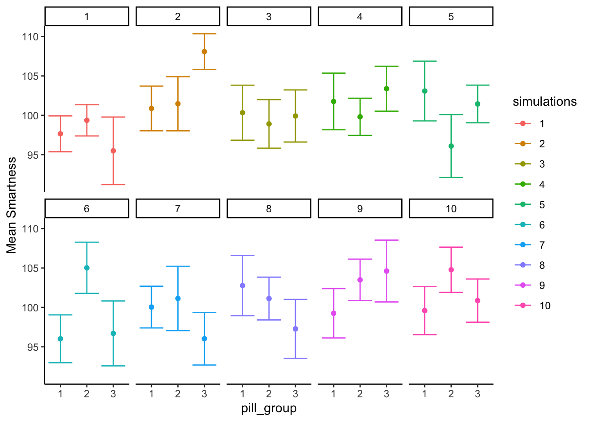

7 ANOVA
A fun bit of stats history (Salsburg 2001). Sir Ronald Fisher invented the ANOVA, which we learn about in this section. He wanted to publish his new test in the journal Biometrika. The editor at the time was Karl Pearson (remember Pearson’s \(r\) for correlation?). Pearson and Fisher were apparently not on good terms, they didn’t like each other. Pearson refused to publish Fisher’s new test. So, Fisher eventually published his work in the Journal of Agricultural Science. Funnily enough, the feud continued onto the next generation. Years after Fisher published his ANOVA, Karl Pearson’s son Egon Pearson, and Jersey Neyman revamped Fisher’s ideas, and re-cast them into what is commonly known as null vs. alternative hypothesis testing. Fisher didn’t like this very much.
We present the ANOVA in the Fisherian sense, and at the end describe the Neyman-Pearson approach that invokes the concept of null vs. alternative hypotheses.
7.1 ANOVA is Analysis of Variance
ANOVA stands for Analysis Of Variance. It is a widely used technique for assessing the likelihood that differences found between means in sample data could be produced by chance. You might be thinking, well don’t we have \(t\)-tests for that? Why do we need the ANOVA, what do we get that’s new that we didn’t have before?
What’s new with the ANOVA, is the ability to test a wider range of means beyond just two. In all of the \(t\)-test examples we were always comparing two things. For example, we might ask whether the difference between two sample means could have been produced by chance. What if our experiment had more than two conditions or groups? We would have more than 2 means. We would have one mean for each group or condition. That could be a lot depending on the experiment. How would we compare all of those means? What should we do, run a lot of \(t\)-tests, comparing every possible combination of means? Actually, you could do that. Or, you could do an ANOVA.
In practice, we will combine both the ANOVA test and \(t\)-tests when analyzing data with many sample means (from more than two groups or conditions). Just like the \(t\)-test, there are different kinds of ANOVAs for different research designs. There is one for between-subjects designs, and a slightly different one for repeated measures designs. We talk about both, beginning with the ANOVA for between-subjects designs.
7.2 One-factor ANOVA
The one-factor ANOVA is sometimes also called a between-subjects ANOVA, an independent factor ANOVA, or a one-way ANOVA (which is a bit of a misnomer as we discuss later). The critical ingredient for a one-factor, between-subjects ANOVA, is that you have one independent variable, with at least two-levels. When you have one IV with two levels, you can run a \(t\)-test. You can also run an ANOVA. Interestingly, they give you almost the exact same results. You will get a \(p\)-value from both tests that is identical (they are really doing the same thing under the hood). The \(t\)-test gives a \(t\)-value as the important sample statistic. The ANOVA gives you the \(F\)-value (for Fisher, the inventor of the test) as the important sample statistic. It turns out that \(t^2\) equals \(F\), when there are only two groups in the design. They are the same test. Side-note, it turns out they are all related to Pearson’s r too (but we haven’t written about this relationship yet in this textbook).
Remember that \(t\) is computed directly from the data. It’s like a mean and standard error that we measure from the sample. In fact it’s the mean difference divided by the standard error of the sample. It’s just another descriptive statistic isn’t it.
The same thing is true about \(F\). \(F\) is computed directly from the data. In fact, the idea behind \(F\) is the same basic idea that goes into making \(t\). Here is the general idea behind the formula, it is again a ratio of the effect we are measuring (in the numerator), and the variation associated with the effect (in the denominator).
\(\text{name of statistic} = \frac{\text{measure of effect}}{\text{measure of error}}\)
\(\text{F} = \frac{\text{measure of effect}}{\text{measure of error}}\)
The difference with \(F\), is that we use variances to describe both the measure of the effect and the measure of error. So, \(F\) is a ratio of two variances.
Remember what we said about how these ratios work. When the variance associated with the effect is the same size as the variance associated with sampling error, we will get two of the same numbers, this will result in an \(F\)-value of 1. When the variance due to the effect is larger than the variance associated with sampling error, then \(F\) will be greater than 1. When the variance associated with the effect is smaller than the variance associated with sampling error, \(F\) will be less than one.
Let’s rewrite in plainer English. We are talking about two concepts that we would like to measure from our data. 1) A measure of what we can explain, and 2) a measure of error, or stuff about our data we can’t explain. So, the \(F\) formula looks like this:
\(\text{F} = \frac{\text{Can Explain}}{\text{Can't Explain}}\)
When we can explain as much as we can’t explain, \(F\) = 1. This isn’t that great of a situation for us to be in. It means we have a lot of uncertainty. When we can explain much more than we can’t we are doing a good job, \(F\) will be greater than 1. When we can explain less than what we can’t, we really can’t explain very much, \(F\) will be less than 1. That’s the concept behind making \(F\).
If you saw an \(F\) in the wild, and it was .6. Then you would automatically know the researchers couldn’t explain much of their data. If you saw an \(F\) of 5, then you would know the researchers could explain 5 times more than the couldn’t, that’s pretty good. And the point of this is to give you an intuition about the meaning of an \(F\)-value, even before you know how to compute it.
7.2.1 Computing the \(F\)-value
Fisher’s ANOVA is very elegant in my opinion. It starts us off with a big problem we always have with data. We have a lot of numbers, and there is a lot of variation in the numbers, what to do? Wouldn’t it be nice to split up the variation into to kinds, or sources. If we could know what parts of the variation were being caused by our experimental manipulation, and what parts were being caused by sampling error, we would be making really good progress. We would be able to know if our experimental manipulation was causing more change in the data than sampling error, or chance alone. If we could measure those two parts of the total variation, we could make a ratio, and then we would have an \(F\) value. This is what the ANOVA does. It splits the total variation in the data into two parts. The formula is:
Total Variation = Variation due to Manipulation + Variation due to sampling error
This is a nice idea, but it is also vague. We haven’t specified our measure of variation. What should we use?
Remember the sums of squares that we used to make the variance and the standard deviation? That’s what we’ll use. Let’s take another look at the formula, using sums of squares for the measure of variation:
\(SS_\text{total} = SS_\text{Effect} + SS_\text{Error}\)
7.2.2 SS Total
The total sums of squares, or \(SS\text{Total}\) is a way of thinking about all of the variation in a set of data. It’s pretty straightforward to measure. No tricky business. All we do is find the difference between each score and the grand mean, then we square the differences and add them all up.
Let’s imagine we had some data in three groups, A, B, and C. For example, we might have 3 scores in each group. The data could look like this:
| groups | scores | diff | diff_squared |
|---|---|---|---|
| A | 20 | 13 | 169 |
| A | 11 | 4 | 16 |
| A | 2 | -5 | 25 |
| B | 6 | -1 | 1 |
| B | 2 | -5 | 25 |
| B | 7 | 0 | 0 |
| C | 2 | -5 | 25 |
| C | 11 | 4 | 16 |
| C | 2 | -5 | 25 |
| Sums | 63 | 0 | 302 |
| Means | 7 | 0 | 33.5555555555556 |
The data is organized in long format, so that each row is a single score. There are three scores for the A, B, and C groups. The mean of all of the scores is called the Grand Mean. It’s calculated in the table, the Grand Mean = 7.
We also calculated all of the difference scores from the Grand Mean. The difference scores are in the column titled diff. Next, we squared the difference scores, and those are in the next column called diff_squared.
Remember, the difference scores are a way of measuring variation. They represent how far each number is from the Grand Mean. If the Grand Mean represents our best guess at summarizing the data, the difference scores represent the error between the guess and each actual data point. The only problem with the difference scores is that they sum to zero (because the mean is the balancing point in the data). So, it is convenient to square the difference scores, this turns all of them into positive numbers. The size of the squared difference scores still represents error between the mean and each score. And, the squaring operation exacerbates the differences as the error grows larger (squaring a big number makes a really big number, squaring a small number still makes a smallish number).
OK fine! We have the squared deviations from the grand mean, we know that they represent the error between the grand mean and each score. What next? SUM THEM UP!
When you add up all of the individual squared deviations (difference scores) you get the sums of squares. That’s why it’s called the sums of squares (SS).
Now, we have the first part of our answer:
\(SS_\text{total} = SS_\text{Effect} + SS_\text{Error}\)
\(SS_\text{total} = 302\) and
\(302 = SS_\text{Effect} + SS_\text{Error}\)
What next? If you think back to what you learned about algebra, and solving for X, you might notice that we don’t really need to find the answers to both missing parts of the equation. We only need one, and we can solve for the other. For example, if we found \(SS_\text{Effect}\), then we could solve for \(SS_\text{Error}\).
7.2.3 SS Effect
\(SS_\text{Total}\) gave us a number representing all of the change in our data, how all the scores are different from the grand mean.
What we want to do next is estimate how much of the total change in the data might be due to the experimental manipulation. For example, if we ran an experiment that causes causes change in the measurement, then the means for each group will be different from other. As a result, the manipulation forces change onto the numbers, and this will naturally mean that some part of the total variation in the numbers is caused by the manipulation.
The way to isolate the variation due to the manipulation (also called effect) is to look at the means in each group, and calculate the difference scores between each group mean and the grand mean, and then sum the squared deviations to find \(SS_\text{Effect}\).
Consider this table, showing the calculations for \(SS_\text{Effect}\).
| groups | scores | means | diff | diff_squared |
|---|---|---|---|---|
| A | 20 | 11 | 4 | 16 |
| A | 11 | 11 | 4 | 16 |
| A | 2 | 11 | 4 | 16 |
| B | 6 | 5 | -2 | 4 |
| B | 2 | 5 | -2 | 4 |
| B | 7 | 5 | -2 | 4 |
| C | 2 | 5 | -2 | 4 |
| C | 11 | 5 | -2 | 4 |
| C | 2 | 5 | -2 | 4 |
| Sums | 63 | 63 | 0 | 72 |
| Means | 7 | 7 | 0 | 8 |
Notice we created a new column called means. For example, the mean for group A was 11. You can see there are three 11s, one for each observation in row A. The means for group B and C happen to both be 5. So, the rest of the numbers in the means column are 5s.
What we are doing here is thinking of each score in the data from the viewpoint of the group means. The group means are our best attempt to summarize the data in those groups. From the point of view of the mean, all of the numbers are treated as the same. The mean doesn’t know how far off it is from each score, it just knows that all of the scores are centered on the mean.
Let’s pretend you are the mean for group A. That means you are an 11. Someone asks you “hey, what’s the score for the first data point in group A?”. Because you are the mean, you say, I know that, it’s 11. “What about the second score?”…it’s 11… they’re all 11, so far as I can tell…“Am I missing something…”, asked the mean.
Now that we have converted each score to it’s mean value we can find the differences between each mean score and the grand mean, then square them, then sum them up. We did that, and found that the \(SS_\text{Effect} = 72\).
\(SS_\text{Effect}\) represents the amount of variation that is caused by differences between the means. I also refer to this as the amount of variation that the researcher can explain (by the means, which represent differences between groups or conditions that were manipulated by the researcher).
Notice also that \(SS_\text{Effect} = 72\), and that 72 is smaller than \(SS_\text{total} = 302\). That is very important. \(SS_\text{Effect}\) by definition can never be larger than \(SS_\text{total}\).
7.2.4 SS Error
Great, we made it to SS Error. We already found SS Total, and SS Effect, so now we can solve for SS Error just like this:
\(SS_\text{total} = SS_\text{Effect} + SS_\text{Error}\)
switching around:
$ SS_ = SS_ - SS_ $
$ SS_ = 302 - 72 = 230 $
We could stop here and show you the rest of the ANOVA, we’re almost there. But, the next step might not make sense unless we show you how to calculate \(SS_\text{Error}\) directly from the data, rather than just solving for it. We should do this just to double-check our work anyway.
| groups | scores | means | diff | diff_squared |
|---|---|---|---|---|
| A | 20 | 11 | -9 | 81 |
| A | 11 | 11 | 0 | 0 |
| A | 2 | 11 | 9 | 81 |
| B | 6 | 5 | -1 | 1 |
| B | 2 | 5 | 3 | 9 |
| B | 7 | 5 | -2 | 4 |
| C | 2 | 5 | 3 | 9 |
| C | 11 | 5 | -6 | 36 |
| C | 2 | 5 | 3 | 9 |
| Sums | 63 | 63 | 0 | 230 |
| Means | 7 | 7 | 0 | 25.5555555555556 |
Alright, we did almost the same thing as we did to find \(SS_\text{Effect}\). Can you spot the difference? This time for each score we first found the group mean, then we found the error in the group mean estimate for each score. In other words, the values in the \(diff\) column are the differences between each score and it’s group mean. The values in the diff_squared column are the squared deviations. When we sum up the squared deviations, we get another Sums of Squares, this time it’s the \(SS_\text{Error}\). This is an appropriate name, because these deviations are the ones that the group means can’t explain!
7.2.5 Degrees of freedom
Degrees of freedom come into play again with ANOVA. This time, their purpose is a little bit more clear. \(Df\)s can be fairly simple when we are doing a relatively simple ANOVA like this one, but they can become complicated when designs get more complicated.
Let’s talk about the degrees of freedom for the \(SS_\text{Effect}\) and \(SS_\text{Error}\).
The formula for the degrees of freedom for \(SS_\text{Effect}\) is
\(df_\text{Effect} = \text{Groups} -1\), where Groups is the number of groups in the design.
In our example, there are 3 groups, so the df is 3-1 = 2. You can think of the df for the effect this way. When we estimate the grand mean (the overall mean), we are taking away a degree of freedom for the group means. Two of the group means can be anything they want (they have complete freedom), but in order for all three to be consistent with the Grand Mean, the last group mean has to be fixed.
The formula for the degrees of freedom for \(SS_\text{Error}\) is
\(df_\text{Error} = \text{scores} - \text{groups}\), or the number of scores minus the number of groups. We have 9 scores and 3 groups, so our \(df\) for the error term is 9-3 = 6. Remember, when we computed the difference score between each score and its group mean, we had to compute three means (one for each group) to do that. So, that reduces the degrees of freedom by 3. 6 of the difference scores could be anything they want, but the last 3 have to be fixed to match the means from the groups.
7.2.6 Mean Squared Error
OK, so we have the degrees of freedom. What’s next? There are two steps left. First we divide the \(SS\)es by their respective degrees of freedom to create something new called Mean Squared Error. Let’s talk about why we do this.
First of all, remember we are trying to accomplish this goal:
\(\text{F} = \frac{\text{measure of effect}}{\text{measure of error}}\)
We want to build a ratio that divides a measure of an effect by a measure of error. Perhaps you noticed that we already have a measure of an effect and error! How about the \(SS_\text{Effect}\) and \(SS_\text{Error}\). They both represent the variation due to the effect, and the leftover variation that is unexplained. Why don’t we just do this?
\(\frac{SS_\text{Effect}}{SS_\text{Error}}\)
Well, of course you could do that. What would happen is you can get some really big and small numbers for your inferential statistic. And, the kind of number you would get wouldn’t be readily interpretable like a \(t\) value or a \(z\) score.
The solution is to normalize the \(SS\) terms. Don’t worry, normalize is just a fancy word for taking the average, or finding the mean. Remember, the SS terms are all sums. And, each sum represents a different number of underlying properties.
For example, the SS_ represents the sum of variation for three means in our study. We might ask the question, well, what is the average amount of variation for each mean…You might think to divide SS_ by 3, because there are three means, but because we are estimating this property, we divide by the degrees of freedom instead (# groups - 1 = 3-1 = 2). Now we have created something new, it’s called the \(MSE_\text{Effect}\).
\(MSE_\text{Effect} = \frac{SS_\text{Effect}}{df_\text{Effect}}\)
\(MSE_\text{Effect} = \frac{72}{2} = 36\)
This might look alien and seem a bit complicated. But, it’s just another mean. It’s the mean of the sums of squares for the effect. If this reminds you of the formula for the variance, good memory. The \(SME_\text{Effect}\) is a measure variance for the change in the data due to changes in the means (which are tied to the experimental conditions).
The \(SS_\text{Error}\) represents the sum of variation for nine scores in our study. That’s a lot more scores, so the \(SS_\text{Error}\) is often way bigger than than \(SS_\text{Effect}\). If we left our SSes this way and divided them, we would almost always get numbers less than one, because the \(SS_\text{Error}\) is so big. What we need to do is bring it down to the average size. So, we might want to divide our \(SS_\text{Error}\) by 9, after all there were nine scores. However, because we are estimating this property, we divide by the degrees of freedom instead (scores-groups) = 9-3 = 6). Now we have created something new, it’s called the \(MSE_\text{Error}\).
\(MSE_\text{Error} = \frac{SS_\text{Error}}{df_\text{Error}}\)
\(MSE_\text{Error} = \frac{230}{6} = 38.33\)
7.2.7 Calculate F
Now that we have done all of the hard work, calculating \(F\) is easy:
\(\text{F} = \frac{\text{measure of effect}}{\text{measure of error}}\)
\(\text{F} = \frac{MSE_\text{Effect}}{MSE_\text{Error}}\)
\(\text{F} = \frac{36}{38.33} = .939\)
Done!
7.2.8 The ANOVA TABLE
You might suspect we aren’t totally done here. We’ve walked through the steps of computing \(F\). Remember, \(F\) is a sample statistic, we computed \(F\) directly from the data. There were a whole bunch of pieces we needed, the dfs, the SSes, the MSEs, and then finally the F.
All of these little pieces are conveniently organized by ANOVA tables. ANOVA tables look like this:
| Df | Sum Sq | Mean Sq | F value | Pr(>F) | |
|---|---|---|---|---|---|
| groups | 2 | 72 | 36.00000 | 0.9391304 | 0.4417359 |
| Residuals | 6 | 230 | 38.33333 | NA | NA |
You are looking at the print-out of an ANOVA summary table from R. Notice, it had columns for \(Df\), \(SS\) (Sum Sq), \(MSE\) (Mean Sq), \(F\), and a \(p\)-value. There are two rows. The groups row is for the Effect (what our means can explain). The Residuals row is for the Error (what our means can’t explain). Different programs give slightly different labels, but they are all attempting to present the same information in the ANOVA table. There isn’t anything special about the ANOVA table, it’s just a way of organizing all the pieces. Notice, the MSE for the effect (36) is placed above the MSE for the error (38.333), and this seems natural because we divide 36/38.33 in or to get the \(F\)-value!
7.3 What does F mean?
We’ve just noted that the ANOVA has a bunch of numbers that we calculated straight from the data. All except one, the \(p\)-value. We did not calculate the \(p\)-value from the data. Where did it come from, what does it mean? How do we use this for statistical inference. Just so you don’t get too worried, the \(p\)-value for the ANOVA has the very same general meaning as the \(p\)-value for the \(t\)-test, or the \(p\)-value for any sample statistic. It tells us that the probability that we would observe our test statistic or larger, under the distribution of no differences (the null).
As we keep saying, \(F\) is a sample statistic. Can you guess what we do with sample statistics in this textbook? We did it for the Crump Test, the Randomization Test, and the \(t\)-test… We make fake data, we simulate it, we compute the sample statistic we are interested in, then we see how it behaves over many replications or simulations.
Let’s do that for \(F\). This will help you understand what \(F\) really is, and how it behaves. We are going to created the sampling distribution of \(F\). Once we have that you will be able to see where the \(p\)-values come from. It’s the same basic process that we followed for the \(t\) tests, except we are measuring \(F\) instead of \(t\).
Here is the set-up, we are going to run an experiment with three levels. In our imaginary experiment we are going to test whether a new magic pill can make you smarter. The independent variable is the number of magic pills you take: 1, 2, or 3. We will measure your smartness using a smartness test. We will assume the smartness test has some known properties, the mean score on the test is 100, with a standard deviation of 10 (and the distribution is normal).
The only catch is that our magic pill does NOTHING AT ALL. The fake people in our fake experiment will all take sugar pills that do absolutely nothing to their smartness. Why would we want to simulate such a bunch of nonsense? The answer is that this kind of simulation is critical for making inferences about chance if you were to conduct a real experiment.
Here are some more details for the experiment. Each group will have 10 different subjects, so there will be a total of 30 subjects. We are going to run this experiment 10,000 times. Each time drawing numbers randomly from the very same normal distribution. We are going to calculate \(F\) from our sample data every time, and then we are going to draw the histogram of \(F\)-values. Figure 7.1 shows the sampling distribution of \(F\) for our situation.
Let’s note a couple things about the \(F\) distribution. 1) The smallest value is 0, and there are no negative values. Does this make sense? \(F\) can never be negative because it is the ratio of two variances, and variances are always positive because of the squaring operation. So, yes, it makes sense that the sampling distribution of \(F\) is always 0 or greater. 2) it does not look normal. No it does not. \(F\) can have many different looking shapes, depending on the degrees of freedom in the numerator and denominator. However, these aspects are too important for now.
Remember, before we talked about some intuitive ideas for understanding \(F\), based on the idea that \(F\) is a ratio of what we can explain (variance due to mean differences), divided by what we can’t explain (the error variance). When the error variance is higher than the effect variance, then we will always get an \(F\)-value less than one. You can see that we often got \(F\)-values less than one in the simulation. This is sensible, after all we were simulating samples coming from the very same distribution. On average there should be no differences between the means. So, on average the part of the total variance that is explained by the means should be less than one, or around one, because it should be roughly the same as the amount of error variance (remember, we are simulating no differences).
At the same time, we do see that some \(F\)-values are larger than 1. There are little bars that we can see going all the way up to about 5. If you were to get an \(F\)-value of 5, you might automatically think, that’s a pretty big \(F\)-value. Indeed it kind of is, it means that you can explain 5 times more of variance than you can’t explain. That seems like a lot. You can also see that larger \(F\)-values don’t occur very often. As a final reminder, what you are looking at is how the \(F\)-statistic (measured from each of 10,000 simulated experiments) behaves when the only thing that can cause differences in the means is random sampling error. Just by chance sometimes the means will be different. You are looking at another chance window. These are the \(F\)s that chance can produce.
7.3.1 Making Decisions
We can use the sampling distribution of \(F\) (for the null) to make decisions about the role of chance in a real experiment. For example, we could do the following.
- Set an alpha criterion of \(p\) = 0.05
- Find out the critical value for \(F\), for our particular situation (with our \(df\)s for the numerator and denominator).
Let’s do that. I’ve drawn the line for the critical value onto the histogram in Figure 7.2:
Alright, now we can see that only 5% of all \(F\)-values from from this sampling distribution will be 3.35 or larger. We can use this information.
How would we use it? Imagine we ran a real version of this experiment. And, we really used some pills that just might change smartness. If we ran the exact same design, with 30 people in total (10 in each group), we could set an \(F\) criterion of 3.35 for determining whether any of our results reflected a causal change in smartness due to the pills, and not due to random chance. For example, if we found an \(F\)-value of 3.34, which happens, just less than 5% of the time, we might conclude that random sampling error did not produce the differences between our means. Instead, we might be more confident that the pills actually did something, after all an \(F\)-value of 3.34 doesn’t happen very often, it is unlikely (only 5 times out of 100) to occur by chance.
7.3.2 Fs and means
Up to here we have been building your intuition for understanding \(F\). We went through the calculation of \(F\) from sample data. We went through the process of simulating thousands of \(F\)s to show you the null distribution. We have not talked so much about what researchers really care about…The MEANS! The actual results from the experiment. Were the means different? that’s often what people want to know. So, now we will talk about the means, and \(F\), together.
Notice, if I told you I ran an experiment with three groups, testing whether some manipulation changes the behavior of the groups, and I told you that I found a big \(F\)!, say an \(F\) of 6!. And, that the \(F\) of 6 had a \(p\)-value of .001. What would you know based on that information alone? You would only know that Fs of 6 don’t happen very often by chance. In fact they only happen 0.1% of the time, that’s hardly at all. If someone told me those values, I would believe that the results they found in their experiment were not likely due to chance. However, I still would not know what the results of the experiment were! Nobody told us what the means were in the different groups, we don’t know what happened!
IMPORTANT: even though we don’t know what the means were, we do know something about them, whenever we get \(F\)-values and \(p\)-values like that (big \(F\)s, and very small associated \(p\)s)… Can you guess what we know? I’ll tell you. We automatically know that there must have been some differences between the means. If there was no differences between the means, then the variance explained by the means (the numerator for \(F\)) would not be very large. So, we know that there must be some differences, we just don’t know what they are. Of course, if we had the data, all we would need to do is look at the means for the groups (the ANOVA table doesn’t report this, we need to do it as a separate step).
7.3.2.1 ANOVA is an omnibus test
This property of the ANOVA is why the ANOVA is sometimes called the omnibus test. Omnibus is a fun word, it sounds like a bus I’d like to ride. The meaning of omnibus, according to the dictionary, is “comprising several items”. The ANOVA is, in a way, one omnibus test, comprising several little tests.
For example, if you had three groups, A, B, and C. You get could differences between
- A and B
- B and C
- A and C
That’s three possible differences you could get. You could run separate \(t\)-tests, to test whether each of those differences you might have found could have been produced by chance. Or, you could run an ANOVA, like what we have been doing, to ask one more general question about the differences. Here is one way to think about what the omnibus test is testing:
Hypothesis of no differences anywhere: $ A = B = C $
Any differences anywhere:
- $ A B = C $
- $ A = B C $
- $ A C = B $
The \(\neq\) symbol means “does not equal”, it’s an equal sign with a cross through it (no equals allowed!).
How do we put all of this together. Generally, when we get a small \(F\)-value, with a large \(p\)-value, we will not reject the hypothesis of no differences. We will say that we do not have evidence that the means of the three groups are in any way different, and the differences that are there could easily have been produced by chance. When we get a large F with a small \(p\)-value (one that is below our alpha criterion), we will generally reject the hypothesis of no differences. We would then assume that at least one group mean is not equal to one of the others. That is the omnibus test. Rejecting the null in this way is rejecting the idea there are no differences. But, the \(F\) test still does not tell you which of the possible group differences are the ones that are different.
7.3.2.2 Looking at a bunch of group means
We just ran 10,000 experiments and we didn’t even once look at the group means for any of the experiments. Different patterns of group means under the null are shown in Figure 7.3 for a subset of 10 random simulations.

Whoa, that’s a lot to look at. What is going on here? Each little box represents the outcome of a simulated experiment. The dots are the means for each group (whether subjects took 1 , 2, or 3 magic pills). The y-axis shows the mean smartness for each group. The error bars are standard errors of the mean.
You can see that each of the 10 experiments turn out different. Remember, we sampled 10 numbers for each group from the same normal distribution with mean = 100, and sd = 10. So, we know that the correct means for each sample should actually be 100 every single time. However, they are not 100 every single time because of?…sampling error (Our good friend that we talk about all the time).
For most of the simulations the error bars are all overlapping, this suggests visually that the means are not different. However, some of them look like they are not overlapping so much, and this would suggest that they are different. This is the siren song of chance (sirens lured sailors to their deaths at sea…beware of the siren call of chance). If we concluded that any of these sets of means had a true difference, we would be committing a type I error. Because we made the simulation, we know that none of these means are actually different. But, when you are running a real experiment, you don’t get to know this for sure.
7.3.2.3 Looking at bar graphs
Let’s look at the exact same graph as above, but this time use bars to visually illustrate the means, instead of dots. We’ll re-do our simulation of 10 experiments, so the pattern will be a little bit different:
In Figure 7.4 the heights of the bars display the means for each pill group. The pattern across simulations is generally the same. Some of the fake experiments look like there might be differences, and some of them don’t.
7.3.2.4 What mean differences look like when \(F\) is less than 1
We are now giving you some visual experience looking at what means look like from a particular experiment. This is for your stats intuition. We’re trying to improve your data senses.
What we are going to do now is similar to what we did before. Except this time we are going to look at 10 simulated experiments, where all of the \(F\)-values were less than 1. All of these \(F\)-values would also be associated with fairly large \(p\)-values. When F is less than one, we would not reject the hypothesis of no differences. So, when we look at patterns of means when F is less than 1, we should see mostly the same means, and no big differences.
In Figure 7.5 the numbers in the panels now tell us which simulations actually produced \(F\)s of less than 1.
We see here that all the bars aren’t perfectly flat, that’s OK. What’s more important is that for each panel, the error bars for each mean are totally overlapping with all the other error bars. We can see visually that our estimate of the mean for each sample is about the same for all of the bars. That’s good, we wouldn’t make any type I errors here.
7.3.2.5 What mean differences look like when F > 3.35
Earlier we found that the critical value for \(F\) in our situation was 3.35, this was the location on the \(F\) distribution where only 5% of \(F\)s were 3.35 or greater. We would reject the hypothesis of no differences whenever \(F\) was greater than 3.35. In this case, whenever we did that, we would be making a type I error. That is because we are simulating the distribution of no differences (remember all of our sample means are coming from the exact same distribution). So, now we can take a look at what type I errors look like. In other words, we can run some simulations and look at the pattern in the means, only when \(F\) happens to be 3.35 or greater (this only happens 5% of the time, so we might have to let the computer simulate for a while). Let’s see what that looks like:
The numbers in the panels now tell us which simulations actually produced \(F\)s that were greater than 3.35
What do you notice about the pattern of means inside each panel of Figure 7.6? Now, every the panels show at least one mean that is different from the others. Specifically, the error bars for one mean do not overlap with the error bars for one or another mean. This is what mistakes looks like. These are all type I errors. They are insidious. When they happen to you by chance, the data really does appear to show a strong pattern, your \(F\)-value is large, and your \(p\)-value is small! It is easy to be convinced by a type I error (it’s the siren song of chance).
7.4 ANOVA on Real Data
We’ve covered many fundamentals about the ANOVA, how to calculate the necessary values to obtain an \(F\)-statistic, and how to interpret the \(F\)-statistic along with it’s associate \(p\)-value once we have one. In general, you will be conducting ANOVAs and playing with \(F\)s and \(p\)s using software that will automatically spit out the numbers for you. It’s important that you understand what the numbers mean, that’s why we’ve spent time on the concepts. We also recommend that you try to compute an ANOVA by hand at least once. It builds character, and let’s you know that you know what you are doing with the numbers.
But, we’ve probably also lost the real thread of all this. The core thread is that when we run an experiment we use our inferential statistics, like ANOVA, to help us determine whether the differences we found are likely due to chance or not. In general, we like to find out that the differences that we find are not due to chance, but instead to due to our manipulation.
So, we return to the application of the ANOVA to a real data set with a real question. This is the same one that you will be learning about in the lab. We give you a brief overview here so you know what to expect.
7.4.1 Tetris and bad memories
Yup, you read that right. The research you will learn about tests whether playing Tetris after watching a scary movie can help prevent you from having bad memories from the movie (James et al. 2015). Sometimes in life people have intrusive memories, and they think about things they’d rather not have to think about. This research looks at one method that could reduce the frequency of intrusive memories.
Here’s what they did. Subjects watched a scary movie, then at the end of the week they reported how many intrusive memories about the movie they had. The mean number of intrusive memories was the measurement (the dependent variable). This was a between-subjects experiment with four groups. Each group of subjects received a different treatment following the scary movie. The question was whether any of these treatments would reduce the number of intrusive memories. All of these treatments occurred after watching the scary movie:
- No-task control: These participants completed a 10-minute music filler task after watching the scary movie.
- Reactivation + Tetris: These participants were shown a series of images from the trauma film to reactivate the traumatic memories (i.e., reactivation task). Then, participants played the video game Tetris for 12 minutes.
- Tetris Only: These participants played Tetris for 12 minutes, but did not complete the reactivation task.
- Reactivation Only: These participants completed the reactivation task, but did not play Tetris.
For reasons we elaborate on in the lab, the researchers hypothesized that the Reactivation+Tetris group would have fewer intrusive memories over the week than the other groups.
Let’s look at the findings. Note you will learn how to do all of these steps in the lab. For now, we just show the findings and the ANOVA table. Then we walk through how to interpret it.
OOooh, look at that. We did something fancy. Figure 7.7 shows the data from the four groups. The height of each bar shows the mean intrusive memories for the week. The dots show the individual scores for each subject in each group (useful to to the spread of the data). The error bars show the standard errors of the mean.
What can we see here? Right away it looks like there is some support for the research hypothesis. The green bar, for the Reactivation + Tetris group had the lowest mean number of intrusive memories. Also, the error bar is not overlapping with any of the other error bars. This implies that the mean for the Reactivation + Tetris group is different from the means for the other groups. And, this difference is probably not very likely by chance.
We can now conduct the ANOVA on the data to ask the omnibus question. If we get a an \(F\)-value with an associated \(p\)-value of less than .05 (the alpha criterion set by the authors), then we can reject the hypothesis of no differences. Let’s see what happens:
| Df | Sum Sq | Mean Sq | F value | Pr(>F) | |
|---|---|---|---|---|---|
| Condition | 3 | 114.8194 | 38.27315 | 3.794762 | 0.0140858 |
| Residuals | 68 | 685.8333 | 10.08578 | NA | NA |
We see the ANOVA table, it’s up there. We could report the results from the ANOVA table like this:
There was a significant main effect of treatment condition, F(3, 68) = 3.79, MSE = 10.08, p=0.014.
We called this a significant effect because the \(p\)-value was less than 0.05. In other words, the \(F\)-value of 3.79 only happens 1.4% of the time when the null is true. Or, the differences we observed in the means only occur by random chance (sampling error) 1.4% of the time. Because chance rarely produces this kind of result, the researchers made the inference that chance DID NOT produce their differences, instead, they were inclined to conclude that the Reactivation + Tetris treatment really did cause a reduction in intrusive memories. That’s pretty neat.
7.4.2 Comparing means after the ANOVA
Remember that the ANOVA is an omnibus test, it just tells us whether we can reject the idea that all of the means are the same. The F-test (synonym for ANOVA) that we just conducted suggested we could reject the hypothesis of no differences. As we discussed before, that must mean that there are some differences in the pattern of means.
Generally after conducting an ANOVA, researchers will conduct follow-up tests to compare differences between specific means. We will talk more about this practice throughout the textbook. There are many recommended practices for follow-up tests, and there is a lot of debate about what you should do. We are not going to wade into this debate right now. Instead we are going to point out that you need to do something to compare the means of interest after you conduct the ANOVA, because the ANOVA is just the beginning…It usually doesn’t tell you want you want to know. You might wonder why bother conducting the ANOVA in the first place…Not a terrible question at all. A good question. You will see as we talk about more complicated designs, why ANOVAs are so useful. In the present example, they are just a common first step. There are required next steps, such as what we do next.
How can you compare the difference between two means, from a between-subjects design, to determine whether or not the difference you observed is likely or unlikely to be produced by chance? We covered this one already, it’s the independent \(t\)-test. We’ll do a couple \(t\)-tests, showing the process.
7.4.2.1 Control vs. Reactivation+Tetris
What we really want to know is if Reactivation+Tetris caused fewer intrusive memories…but compared to what? Well, if it did something, the Reactivation+Tetris group should have a smaller mean than the Control group. So, let’s do that comparison:
#>
#> Two Sample t-test
#>
#> data: Days_One_to_Seven_Number_of_Intrusions by Condition
#> t = 2.9893, df = 34, p-value = 0.005167
#> alternative hypothesis: true difference in means between group Control and group Reactivation+Tetris is not equal to 0
#> 95 percent confidence interval:
#> 1.031592 5.412852
#> sample estimates:
#> mean in group Control mean in group Reactivation+Tetris
#> 5.111111 1.888889We found that there was a significant difference between the control group (M=5.11) and Reactivation + Tetris group (M=1.89), t(34) = 2.99, p=0.005.
Above you just saw an example of reporting another \(t\)-test. This sentences does an OK job of telling the reader everything they want to know. It has the means for each group, and the important bits from the \(t\)-test.
More important, as we suspected the difference between the control and Reactivation + Tetris group was likely not due to chance.
7.4.2.2 Control vs. Tetris_only
Now we can really start wondering what caused the difference. Was it just playing Tetris? Does just playing Tetris reduce the number of intrusive memories during the week? Let’s compare that to control:
#>
#> Two Sample t-test
#>
#> data: Days_One_to_Seven_Number_of_Intrusions by Condition
#> t = 1.0129, df = 34, p-value = 0.3183
#> alternative hypothesis: true difference in means between group Control and group Tetris_only is not equal to 0
#> 95 percent confidence interval:
#> -1.230036 3.674480
#> sample estimates:
#> mean in group Control mean in group Tetris_only
#> 5.111111 3.888889Here we did not find a significant difference. We found that no significant difference between the control group (M=5.11) and Tetris Only group (M=3.89), t(34) = 2.99, p=0.318.
So, it seems that not all of the differences between our means are large enough to be called statistically significant. In particular, the difference here, or larger, happens by chance 31.8% of the time.
You could go on doing more comparisons, between all of the different pairs of means. Each time conducting a \(t\)-test, and each time saying something more specific about the patterns across the means than you get to say with the omnibus test provided by the ANOVA.
Usually, it is the pattern of differences across the means that you as a researcher are primarily interested in understanding. Your theories will make predictions about how the pattern turns out (e.g., which specific means should be higher or lower and by how much). So, the practice of doing comparisons after an ANOVA is really important for establishing the patterns in the means.
7.5 ANOVA Summary
We have just finished a rather long introduction to the ANOVA, and the \(F\)-test. The next couple of chapters continue to explore properties of the ANOVA for different kinds of experimental designs. In general, the process to follow for all of the more complicated designs is very similar to what we did here, which boils down to two steps:
- conduct the ANOVA on the data
- conduct follow-up tests, looking at differences between particular means
So what’s next…the ANOVA for repeated measures designs. See you in the next chapter.